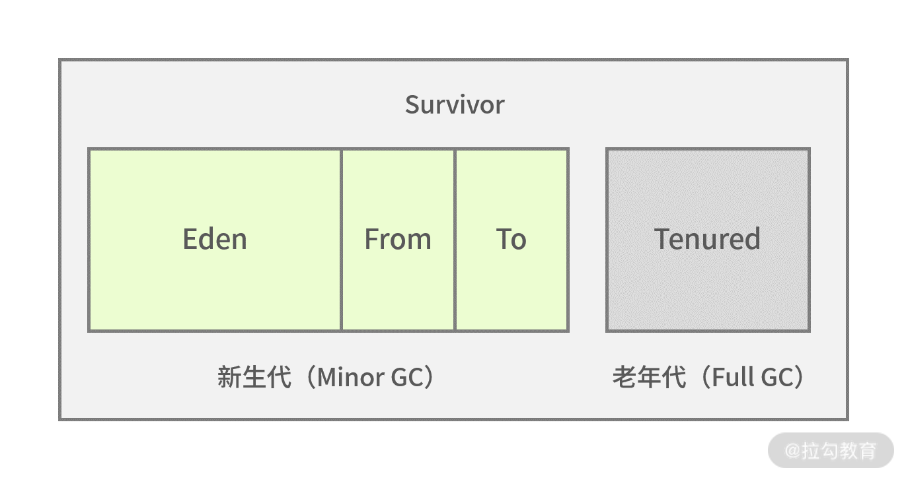
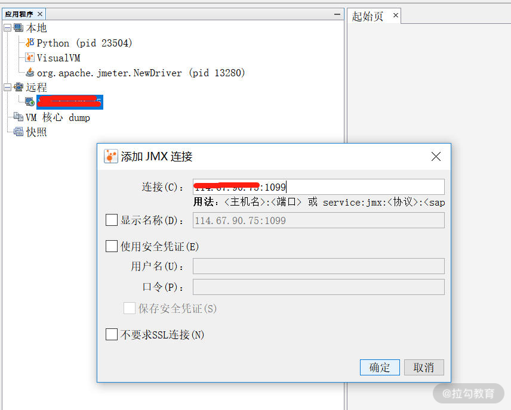

- 00 开篇词 为什么每个测试人都要学好性能测试？.md.html
- 01 JMeter 的核心概念.md.html
- 02 JMeter 参数化策略.md.html
- 03 构建并执行 JMeter 脚本的正确姿势.md.html
- 04 JMeter 二次开发其实并不难.md.html
- 05 如何基于 JMeter API 开发性能测试平台？.md.html
- 06 Nginx 在系统架构中的作用.md.html
- 07 你真的知道如何制定性能测试的目标吗？.md.html
- 08 性能测试场景的分类和意义.md.html
- 09 如何制定一份有效的性能测试方案？.md.html
- 10 命令行监控 Linux 服务器的要点.md.html
- 11 分布式服务链路监控以及报警方案.md.html
- 12 如何把可视化监控也做得酷炫？.md.html
- 13 Docker 的制作、运行以及监控.md.html
- 14 如何从 CPU 飙升定位到热点方法？.md.html
- 15 如何基于 JVM 分析内存使用对象？.md.html
- 16 如何通过 Arthas 定位代码链路问题？.md.html
- 17 如何应对 Redis 缓存穿透、击穿和雪崩？.md.html
- 18 如何才能优化 MySQL 性能？.md.html
- 19 如何根治慢 SQL？.md.html
- 20 结束语 线上全链路性能测试实践总结.md.html
- 捐赠
15 如何基于 JVM 分析内存使用对象？
上一讲我带你学习了基于 JVM 的线程分析，相信你已经可以通过热点线程分析出哪些方法在消耗 CPU，拿到这些方法之后你就可以和研发人员讨论后续的优化方案了。那这一讲我们就来重点学习 JVM 内存是如何管理的，有哪些手段可以分析内存对象，并帮助你定位内存的瓶颈。
提到分析 JVM 的内存对象，可能你会问我，之前讲过如何判断服务器内存瓶颈，那 JVM 内存和服务器内存有什么联系呢。我们先来看下这两者的关系，如下图所示：

图 1：内存关系示意图
其实二者的关系很简单，对于服务器系统而言，JVM 只是其中的一部分。当操作系统内存出现瓶颈时，我们便会重点排查哪些应用会占用内存。不过对于更深一步分析内存的使用，并不仅仅是统计使用、空闲等这些数值，我们需要进一步去了解内存结构，以及内存如何分配、如何回收，这样你才能更好地确定内存的问题。
JVM 内存分配
通过第 14 讲的学习你可以知道，Java 文件一般是先编译成 class 结尾的文件，然后通过类加载器到 JVM 内存中。接着我们来看看 JVM 内存结构图，这样能够对它有个全局的了解。

图 2：JVM 内存分配示意图
1.本地方法栈
本地方法栈保存的是 native 方法的信息，native 方法就是 Java 调用非 Java 代码的接口，为什么会有这样的设置呢？简单来说，sun 的解释器是由 C 语言实现的，而 jre 又是基于 Java 语言，所以需要 native 方法来进行跨语言的调用。
2.Java 栈
Java 栈是常用的内存区域之一，它里面存放着基本数据类型和对象的引用，可能你不太清楚什么是对象的引用，拿上一讲中 HelloTester helloTester=new HelloTester() 为例，在 Java 栈中 HelloTester 是个引用，指向在堆空间中开辟的该对象的空间。
3.方法区（JDK 1.8+已经移除）
也叫作永久区，用来存储类信息，如上文描述的 HelloTester。值得注意的是方法区在 JDK 1.8 以上已经被元空间取代，并且元空间不在 JVM 中了，而是在本地内存中独立开辟存储空间。
4.程序计数器
可以认为是线程的信号指示器，它的作用是保存线程当前程序的执行位置，以保证多线程的切换。因为在多线程的情况下，CPU 并不是完成一个线程执行再去执行另外一个线程，而是不停地切换线程执行，这时程序计数器就可以发挥作用了。
5.堆
堆区域是 JVM 调优最重要的区域，堆中存放的数据很多是对象实例，如 HelloTester 的对象存储。堆空间占据着 JVM 中最大的存储区域，存放了很多对象，所以大多数基于 JVM 的内存调优也是对堆空间的调优。
堆空间并非取之不尽，如果一直存放总有用完的时候，所以对于有用的对象应当保存起来，无用的对象应当回收，为了更好地实现这一机制，JVM 将堆空间分成了新生代和老生代，如下图所示：

图 3：GC 示意对比图
通过图 3 可以看到新生代和老年代的对比，Minor GC 发生在新生代，而 Full GC 发生在老年代。新生代分为三个区，一个 Eden 区和两个 Survivor 区。
先来看下 Eden 区的作用，大部分新生成的对象都是在 Eden 区，Eden 区满了之后便没有内存给新对象使用，Eden 区便会 Minor GC 回收无用内存，剩下的存活对象便会转移到 Survivor 区。
那两个 Survivor 区的作用分别是什么呢？两者其实是对称分布的，一个是 From 区，一个是 To 区。从 Eden 区存活下来的对象首先会被复制到 From 区，当 From 区满时，此时还存活的对象会被转移到 To 区，经历了多次的 Minor GC 后，还存活的对象就会被复制到老年代，老年代的 GC 一般叫作 FullGC 或者 MajorGC。
我们对比下新生代垃圾回收和老年代垃圾回收的区别，如下表所示：

如何定位内存占用问题
回到我们实际工作当中，当你发现 JVM 中使用的内存越来越多或者增长很快的时候，频繁 GC 的时候，应当如何去定位哪些对象导致的这些问题呢？
这其实涉及两个问题：
- 如何去观察 GC 的频次；
- 定位占用内存的对象。
1.如何观察 GC 的频次？
本部分我以 JDK 自带的工具来讲解，我一般使用 jstat 来查看 GC 的频次。首先我们来看下基本用法，如下所示：
[root@JD ~]# jstat -gc 26607 1000 3
S0C S1C S0U S1U EC EU OC OU MC MU CCSC CCSU YGC YGCT FGC FGCT GCT
512.0 512.0 320.0 0.0 86016.0 27828.5 175104.0 157974.6 122840.0 116934.9 16128.0 15060.4 5328 37.311 4 1.042 38.353
512.0 512.0 320.0 0.0 86016.0 27981.9 175104.0 157974.6 122840.0 116934.9 16128.0 15060.4 5328 37.311 4 1.042 38.353
512.0 512.0 320.0 0.0 86016.0 28885.4 175104.0 157974.6 122840.0 116934.9 16128.0 15060.4 5328 37.311 4 1.042 38.353
我们来解析下终端输入的命令：
jstat -gc 26607 1000 3
- 26607 代表查看的 PID 的 Java 进程号；
- 1000 代表每隔 1000ms 也就是 1s 显示一次；
- 3 代表一共显示三次。
接着我们再来看输出选项代表的含义有哪些？这个输出的信息含量比较大，不过信息是有对应关系的，比如 S0C 和 S0U：
- 一般 C 结尾的代表总的容量大小或者计数的次数；
- U 结尾代表已使用的容量大小。
这是通用的，你可以看到输出项中有很多以 C 或者 U 结尾。S0 则代表第一个 Survivor 区，也就是我上文说的 From 区。通过以上的讲解，我相信很多名词你不用死记硬背也能理解了，比如 S1C 和 S1U 则表示第二个 Survivor 区也就是 To 区的总容量和使用容量。
接下来我罗列下其他的输出选项含义。
- EC / EU：Eden 区的总容量/已使用空间的大小。
- OC / OU：老年代总容量/老年代已使用空间大小。
- MC / MU：方法区总容量/方法区已使用容量大小。
- CCSC / CCSU：压缩类总容量/压缩类空间使用大小。
- YGC / YGCT：年轻代垃圾回收的次数/年轻代垃圾回收消耗时间。
- FGC / FGCT： 老年代垃圾回收次数/老年代垃圾回收消耗时间。
- GCT：垃圾回收消耗总时间。
这样对比着看会更直观一点，对于上述输出选项的含义我们都需要有一定的印象，从而通过垃圾回收频率和消耗时间初步判断 GC 是否存在可疑问题。
有同学问过这样的问题，堆内存区域划分了这么多代，感觉很复杂，为什么要这么做呢？
我想不分代，内存垃圾肯定也是可以回收的。而让内存区域分代，主要就是优化垃圾回收的性能，也就是 GC 的性能。有点类似于我们日常生活中的垃圾分类，你把干湿垃圾分离，一方面有利于下一步的再利用，再者对于我们后续垃圾的处理效率也会有较大的提升。对于内存回收其实也是这样的，如果不分代那么所有的对象可能都在同一个大的区间里，GC 依次判断则效率必然是很低，如果是分代处理，对不同的区域分以不同的回收策略，这样效率会高很多。
2.如何定位占用内存的对象？
这里我将推荐一个工具 jmap，通过 jmap 可以指定 Java 进程的 PID，查看该进程的对象、数量等等，接下来我做一个演示。
首先我们来查看进程号为 18658 的应用包，如下所示：
[root@JD ~]# ps -ef|grep demo
root 18658 1 0 Dec09 ?后续省略
其中上述输出的第二列 18658 为进程号，然后将进程号通过命令组合可以查看以下信息：
[root@JD ~]# jmap -histo 18658|head -n 20
num #instances #bytes class name
----------------------------------------------
1: 157619 18840672 [C
2: 8326 8324360 [B
3: 146319 3511656 java.lang.String
4: 9224 2825584 [I
5: 65733 2103456 com.example.demo.entity.User
6: 62508 2000256 java.util.HashMap$Node
7: 21868 1618832 [Ljava.lang.Object;
- num 是编号；
- instances 是生成的实例个数；
- bytes 是实例占用的大小；
- classs name 对象的类名。
其中 [C、[S、[I、[B 对应的类型如下所示：
[C is a char[]
[S is a short[]
[I is a int[]
[B is a byte[]
你注意下第五行，这是能够最直接看到的业务类，如果是业务对象尤其需要关注，看是否一直上升。
可视化的 JVM 监控工具
在第三模块中，你可以知道，对于监控定位我一般会采用命令行结合可视化的方案一并讲解，接下来我介绍一个 JDK 自带的 JVM 监控工具：jvisual。
jvisual 能做的事情很多，监控内存泄漏、跟踪垃圾回收、执行时内存分析、CPU 线程分析等，而且通过图形化的界面指引就可以完成，接下来我主要讲述 jvisual 如何使用以及如何看内存对象的占用。
先来看下 jvisual 是如何使用的，一般我们会在启动被测的 jar 服务里进行如下配置：
nohup java -Djava.rmi.server.hostname=实际ip -Dcom.sun.management.jmxremote -Dcom.sun.management.jmxremote.port=1099 -Dcom.sun.management.jmxremote.authenticate=false -Dcom.sun.management.jmxremote.ssl=false -jar demo-0.0.1-SNAPSHOT.jar &
通过这样的方式可以启动暴露 1099 端口，且连接时不需要认证。
然后在本机电脑 jdk 路径 bin 目录下找到 jvisualvm，双击打开，如下图所示：

我们再配置相应的 jmx 连接，如下图所示：

如果出现如下图所示的界面，就证明连接成功了。

这样我们就能够概览 JVM 的 CPU 和内存的使用情况，如下图所示，通过点击抽样器，你可以分别获得对象在 CPU 和内存的占用。值得注意的是很多初学者把这部分 CPU 监控或者内存监控认为是服务器硬件级别的，这是不对的，这些都是基于 JVM 的监控。

按照内存占用进行排序是非常清晰的，你可以看到随着性能测试的进行，User 类字节占用比例越来越高，如下图所示：

总结
通过本讲的学习，你了解了 JVM 的内存结构，知道了 Java 内存对象经常活动的区域，同时列举了常见的排查手段诊断内存问题。
© 2019 - 2023 Liangliang Lee. Powered by gin and hexo-theme-book.